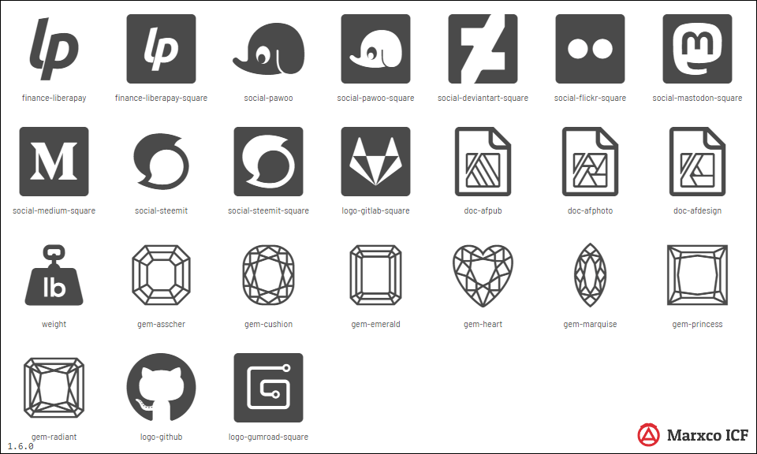

Changelog
1.6.0 - 2020-02-24

Added
finance-liberapay and finance-liberapay-square.social-pawooandsocial-pawoo-square.social-deviantart-squaresocial-flickr-squaresocial-mastodon-squaresocial-medium-squaresocial-steemit and social-steemit-square.gem-asschergem-cushiongem-emeraldgem-heartgem-marquisegem-princessgem-radiantdoc-afpublogo-gitlab-squarelogo-gumroad-squareweight
Changed
- Removed loose parts from
gem-oval and gem-round
logo-githubdoc-afphotodoc-afdesign- Extra `title` and `defs` tags removed from SVGs.
- Code has been rewritten with ECMAScript 6 to match the requirements of Gulp 4.x and Node.JS 12.
- Icons selectors now are sorted by category and iconname.
1.5.0 - 2019-11-04
Added
gems category in range 62905-63004.gem-ovalgem-peargem-roundcult-skullcult-jack-o-lantern